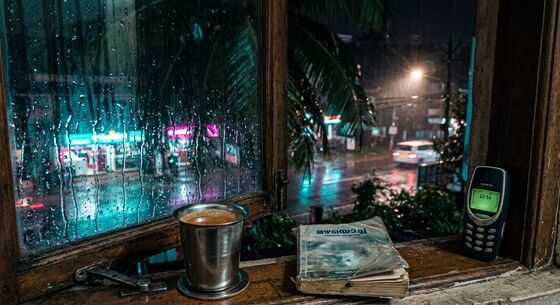

27 nov 202602:10 – 04:50 · stat junction
the 4am tea stall is a kind of library
There is a stall near the junction that opens at 3:40 and closes when the milk runs out, which on a wet night is somewhere around six. It has three plastic stools, a bulb with a halo, a gas stove that sounds like a small aircraft, and a bench of men who have all known each other for thirty years and still argue about the same bus route.
The tea there is boiled in a steel vessel until it is more idea than liquid. You get it in a glass so hot that your fingers negotiate with your brain for the first ten seconds. I have started going at 4am with my notebook because nothing else in the city is that honest at that hour.

Things overheard, roughly transcribed:
- “The road is not flooded, the road is thinking.”
- “In '88 the water came up to the counter and we sold tea from the boat.”
- “Put less sugar. No — less than that. My wife is a doctor.”
I stayed until the sky went from black to the colour of a wet slate. Total cost: ₹28, including a banana I did not ask for and could not refuse. This is, as far as I can tell, the entire point of living somewhere.